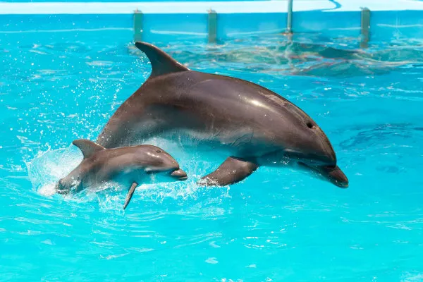
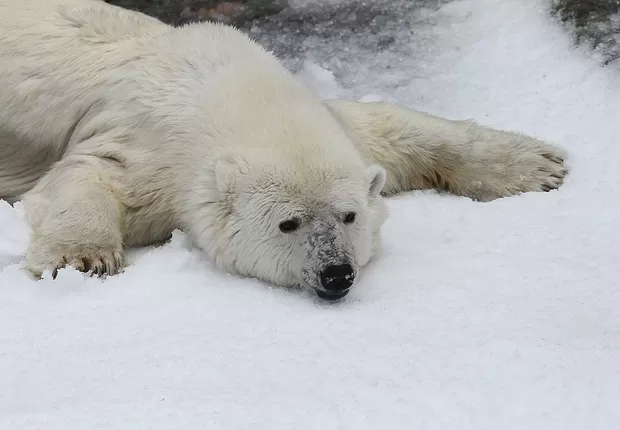
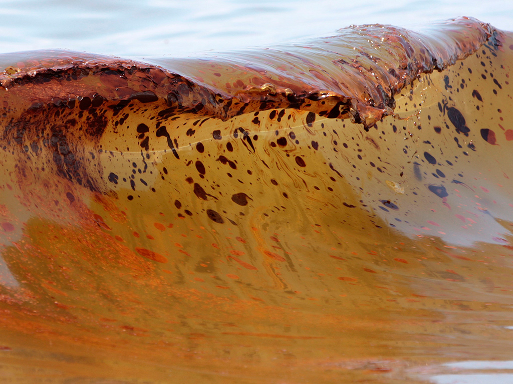

Contaminação por Metais Pesados nos Oceanos
A contaminação dos oceanos por metais pesados como mercúrio, chumbo, cádmio e arsênio tem se tornado uma crise ambiental de proporções globais. Esses elementos tóxicos chegam aos mares principalmente através de descargas industriais, mineração, escoamento agrícola e, em menor escala, por atividades naturais como erosão de rochas. Estudos da UNESCO indicam que as concentrações de mercúrio em alguns ecossistemas marinhos triplicaram nos últimos 150 anos, com picos alarmantes em áreas próximas a regiões industrializadas como o Mar Báltico e o Golfo do México. Uma vez na água, esses metais não se degradam, persistindo no ambiente por séculos e acumulando-se nos tecidos dos organismos vivos.
Os efeitos na vida marinha são devastadores. Metais pesados interferem no desenvolvimento de peixes e moluscos, causando deformidades, redução na taxa de crescimento e comprometimento reprodutivo. No topo da cadeia alimentar, animais como tubarões e baleias-orca apresentam concentrações de mercúrio até 10 milhões de vezes maiores que as encontradas na água ao seu redor. Corais expostos a esses contaminantes sofrem branqueamento acelerado e perda de resistência a doenças. Um estudo publicado na revista "Marine Pollution Bulletin" revelou que mesmo baixas concentrações de cádmio podem reduzir em 40% a capacidade de fotossíntese das algas marinhas, base fundamental dos ecossistemas oceânicos.
O processo de bioacumulação transforma esses metais em uma ameaça direta à saúde humana. Organismos filtradores como ostras e mexilhões concentram toxinas em seus tecidos, que são subsequentemente ingeridos por peixes maiores e, eventualmente, por humanos. A Organização Mundial da Saúde alerta que o consumo regular de frutos do mar contaminados pode levar a danos neurológicos, problemas renais e até certos tipos de câncer. Comunidades costeiras e populações que dependem fortemente de recursos marinhos são particularmente vulneráveis. No Japão, o desastre de Minamata na década de 1950 - causado por mercúrio industrial - serviu como um alerta sombrio para os riscos dessa contaminação, com centenas de vítimas sofrendo de envenenamento grave.
As fontes dessa poluição são diversas e complexas. A queima de carvão em usinas termelétricas é responsável por cerca de 40% das emissões antropogênicas de mercúrio, que depois se depositam nos oceanos através da chuva. A mineração de ouro em pequena escala contribui com aproximadamente 20% da poluição global por mercúrio, enquanto o descarte inadequado de eletrônicos adiciona quantidades significativas de chumbo e cádmio aos ecossistemas marinhos. Até mesmo a perfuração petrolífera em alto mar libera metais pesados como bário e cromo através da chamada "água de produção", um subproduto tóxico da extração de petróleo que muitas vezes é despejado diretamente no oceano.
Os desafios para remediar essa contaminação são imensos. Diferentemente de poluentes orgânicos, os metais pesados não podem ser quebrados ou degradados naturalmente. Tecnologias de limpeza como fitorremediação (uso de plantas acumuladoras) mostram resultados promissores em áreas costeiras, mas são ineficazes em águas profundas. Algumas abordagens inovadoras envolvem o uso de nanopartículas para capturar metais dissolvidos, ou a aplicação de certos tipos de bactérias que podem transformar mercúrio em formas menos tóxicas. No entanto, essas soluções ainda estão em fase experimental e enfrentam limitações de escala e custo.
Enquanto isso, a contaminação continua a se espalhar, com consequências cada vez mais visíveis. Um relatório do Programa das Nações Unidas para o Meio Ambiente estima que a quantidade de mercúrio circulando nos oceanos pode aumentar em 50% até 2050 se as emissões atuais persistirem. Regiões como o Ártico, onde os metais pesados tendem a se acumular devido a padrões globais de circulação atmosférica, já apresentam níveis preocupantes em animais tradicionais da dieta indígena. Apesar da Convenção de Minamata sobre Mercúrio, adotada em 2013, a implementação de controles mais rígidos sobre as fontes de poluição por metais pesados avança lentamente, deixando os oceanos - e todos que deles dependem vulneráveis a essa ameaça invisível, porém persistente.
Toxicidade Crônica por Metais Pesados em Peixes e Mamíferos Marinhos
A exposição prolongada a metais pesados, como mercúrio, chumbo e cádmio, causa efeitos devastadores em peixes e mamíferos marinhos, mesmo em baixas concentrações. Estudos do Instituto Oceânico Woods Hole revelam que o mercúrio, quando convertido em metilmercúrio (sua forma mais tóxica), se acumula nos tecidos musculares e órgãos vitais, levando a danos neurológicos, falhas reprodutivas e imunossupressão. Peixes como o atum e o peixe-espada, que estão no topo da cadeia alimentar, apresentam os níveis mais altos de contaminação, sofrendo alterações comportamentais, como perda de capacidade de caça e desorientação migratória.
Em mamíferos marinhos, como golfinhos e baleias, a intoxicação crônica por metais pesados está ligada a lesões renais, distúrbios hormonais e aumento da mortalidade infantil. Pesquisas na Baía de Minamata (Japão), onde ocorreu um dos maiores desastres por mercúrio, mostraram que golfinhos desenvolveram sintomas semelhantes à doença de Minamata humana, incluindo convulsões e paralisia. Além disso, o cádmio, comum em resíduos industriais, está associado a falhas no sistema imunológico de focas e leões-marinhos, tornando-os mais suscetíveis a infecções bacterianas e virais.
Um dos impactos mais preocupantes é a disrupção endócrina, onde metais como o chumbo e o arsênio interferem na produção de hormônios essenciais para reprodução e crescimento. Tartarugas marinhas contaminadas apresentam taxas anormais de nascimento de filhotes machos ou fêmeas, afetando o equilíbrio populacional. Em peixes, a exposição ao mercúrio reduz a fertilidade e causa má-formação em embriões, comprometendo futuras gerações de espécies já ameaçadas pela pesca predatória.

Fonte Disponível em: Brasil Escola

Fonte Disponível em: Epoca negocios
A bioacumulação é um processo irreversível que amplifica os efeitos tóxicos ao longo da cadeia alimentar. Plânctons absorvem metais da água, peixes pequenos ingerem plânctons contaminados e, por fim, grandes predadores acumulam doses letais. Baleias-orca, por exemplo, podem ter concentrações de PCBs (policlorobifenilos) e mercúrio 500 vezes maiores que as encontradas no ambiente ao seu redor, levando a câncer e infertilidade. Esse fenômeno é especialmente grave em regiões polares, onde os metais pesados se acumulam devido às correntes oceânicas.
Apesar dos esforços de regulamentação, como a Convenção de Minamata sobre Mercúrio, muitos ecossistemas já estão irreversivelmente contaminados. No Ártico, onde o degelo libera estoques históricos de poluentes, populações de ursos polares e focas apresentam níveis alarmantes de mercúrio no sangue. Enquanto isso, no Mediterrâneo, golfinhos continuam a morrer intoxicados por chumbo de atividades industriais costeiras.
Risco para Humanos que Consomem Frutos do Mar Contaminados
O consumo de frutos do mar contaminados por metais pesados representa um grave risco à saúde humana, com efeitos que vão desde distúrbios neurológicos até câncer. A Organização Mundial da Saúde (OMS) alerta que o metilmercúrio é uma das substâncias mais perigosas, especialmente para grávidas e crianças, pois atravessa a barreira placentária e afeta o desenvolvimento cerebral fetal. Peixes como atum, tubarão e peixe-espada estão entre os mais contaminados, com níveis que ultrapassam os limites seguros em muitas regiões do mundo.
No Japão e na Amazônia, onde o consumo de peixe é alto, estudos associam a exposição ao mercúrio a doenças neurodegenerativas, como Parkinson e Alzheimer. A doença de Minamata, causada por envenenamento por mercúrio na década de 1950, deixou centenas de vítimas com sintomas como perda de visão, tremores e paralisia. Hoje, mesmo em baixas doses, a exposição crônica pode causar perda de memória, depressão e alterações motoras, segundo pesquisas da Universidade de Harvard.
Além do mercúrio, outros metais como chumbo e cádmio presentes em mariscos e crustáceos estão ligados a doenças renais, osteoporose e câncer. Ostras e mexilhões, que filtram grandes volumes de água, acumulam toxinas em níveis perigosos. Um relatório da European Food Safety Authority (EFSA) mostrou que o consumo regular de frutos do mar contaminados pode elevar em 30% o risco de câncer de rim devido ao cádmio.

Fonte Disponível em: sos rios do brasil

Fonte Disponível em: Olhar digital
Comunidades costeiras e indígenas são as mais vulneráveis, já que dependem do mar como principal fonte de alimento. No Brasil, pesquisas na Baía de Guanabara detectaram níveis de chumbo em camarões 50 vezes acima do limite seguro. Na Índia, pescadores que se alimentam diariamente de peixes contaminados apresentam lesões hepáticas e dermatológicas crônicas. A falta de monitoramento em muitos países agrava o problema, pois os consumidores não têm acesso a informações sobre a segurança dos alimentos.
Apesar de agências reguladoras estabelecerem limites máximos de contaminação, a fiscalização é falha em muitas regiões. Nos EUA, o FDA recomenda que grávidas evitem certos peixes, mas em nações em desenvolvimento, não há alertas claros. Além disso, o cozimento não elimina metais pesados, tornando impossível reduzir o risco apenas com preparo culinário.
Diante desse cenário, especialistas recomendam diversificar a dieta, optando por peixes de cadeia alimentar mais baixa, como sardinha e anchova, que acumulam menos toxinas. No entanto, a solução definitiva exige controle rigoroso das fontes de poluição, incluindo a redução de emissões industriais e o banimento progressivo de produtos que liberam metais pesados no meio ambiente. Enquanto isso, milhões de pessoas continuam expostas a riscos silenciosos, mas potencialmente fatais.
Videos Relacionados a Leitura
Peixes Contaminados por mercúrio
Por que tantos peixes estão contaminados por mercúrio
Mercurio
Contaminação de mercurio em águas